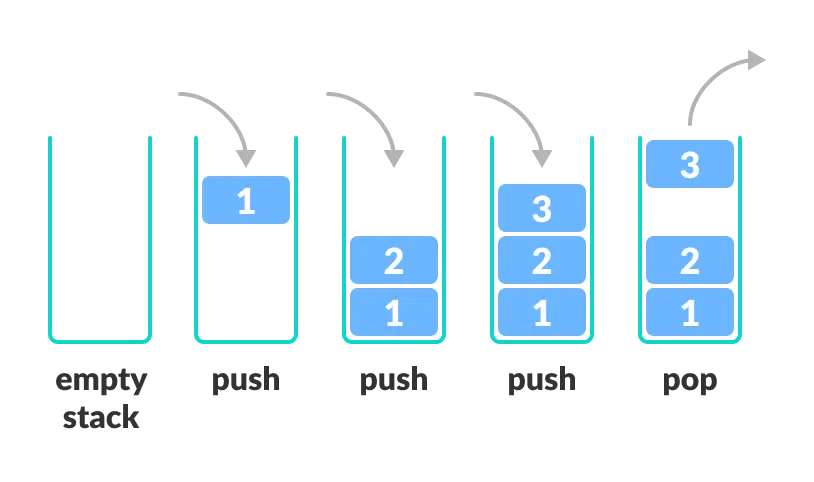

Stack Data Structure
- A stack is a linear data structure that follows the principle of Last In First Out (LIFO). This means the last element inserted inside the stack is removed first.
- You can think of the stack data structure as the pile of plates on top of another.
Stack representation similar to a pile of plate
Here,You Can:
- Put a new plate on top
- Remove the top plate
And, if you want the plate at the bottom, you must first remove all the plates on top. This is exactly how the stack data structure works.
- In programming terms, putting an item on top of the stack is called push and removing an item is called pop.
- In the above image, although item 3 was kept last, it was removed first. This is exactly how the LIFO (Last In First Out) Principle works.
- We can implement a stack in any programming language like C, C++, Java, Python or C#, but the specification is pretty much the same..
- Push: Add an element to the top of a stack.
- Pop: Remove an element from the top of a stack.
- IsEmpty: Check if the stack is empty.
- IsFull: Check if the stack is full.
- Peek: Get the value of the top element without removing it.
- A pointer called ''TOP'' is used to keep track of the top element in the stack.
- When initializing the stack, we set its value to -1 so that we can check if the stack is empty by comparing "TOP == -1".
- On pushing an element, we increase the value of "TOP" and place the new element in the position pointed to by "TOP".
- On popping an element, we return the element pointed to by "TOP" and reduce its value.
- Before pushing, we check if the stack is already full.
- Before popping, we check if the stack is already empty.
- Checks if the stack is full.
- If the stack is full, produces an error and exit.
- If the stack is not full, increments top to point to the next empty space.
- Adds data element to the stack location, where top is pointing.
- Returns success.
- Although stack is a simple data structure to implement, it is very powerful. The most common uses of a stack are:
- To reverse a word - Put all the letters in a stack and pop them out. Because of the LIFO order of stack, you will get the letters in reverse order.
- In compilers - Compilers use the stack to calculate the value of expressions like "2 + 4 / 5 * (7 - 9)" by converting the expression to prefix or postfix form.
- In browsers - The back button in a browser saves all the URLs you have visited previously in a stack. Each time you visit a new page, it is added on top of the stack. When you press the back button, the current URL is removed from the stack, and the previous URL is accessed.
LIFO Principle of Stack

Stack Push and Pop Operations
Basic Operations of Stack
There are some basic operations that allow us to perform different actions on a stack.
Working of Stack Data Structure
The operations work as follows:

Working of Stack Data Structure
Insertion Sort Algorithm
Stack Implementations in Python, Java and C/C++
The most common stack implementation is using arrays, but it can also be implemented using lists.
# Stack implementation in Python
class Stack:
def __init__(self):
self.stack = []
def push(self, item):
self.stack.append(item)
def pop(self):
if not self.is_empty():
return self.stack.pop()
else:
return None
def is_empty(self):
return len(self.stack) == 0
def display(self):
return self.stack
# Example usage
stack = Stack()
stack.push(10)
stack.push(20)
stack.push(30)
print(stack.display()) # Output: [10, 20, 30]
stack.pop()
print(stack.display()) # Output: [10, 20]
// Stack implementation in Java
class Stack {
private int[] stack;
private int top;
public Stack(int size) {
stack = new int[size];
top = -1;
}
public void push(int item) {
if (top < stack.length - 1) {
stack[++top] = item;
}
}
public int pop() {
if (top >= 0) {
return stack[top--];
}
return -1; // Indicating stack is empty
}
public boolean isEmpty() {
return top == -1;
}
public void display() {
for (int i = 0; i <= top; i++) {
System.out.println(stack[i]);
}
}
}
// Example usage
public static void main(String[] args) {
Stack stack = new Stack(5);
stack.push(10);
stack.push(20);
stack.push(30);
stack.display(); // Output: 10 20 30
stack.pop();
stack.display(); // Output: 10 20
}
// Stack implementation in C
#include <stdio.h>
#define MAX 5
int stack[MAX];
int top = -1;
void push(int item) {
if (top < MAX - 1) {
stack[++top] = item;
}
}
int pop() {
if (top >= 0) {
return stack[top--];
}
return -1; // Indicating stack is empty
}
void display() {
for (int i = 0; i <= top; i++) {
printf("%d\n", stack[i]);
}
}
int main() {
push(10);
push(20);
push(30);
display(); // Output: 10 20 30
pop();
display(); // Output: 10 20
return 0;
}
// Stack implementation in C++
#include <iostream>
#include <vector>
class Stack {
private:
std::vector<int> stack;
public:
void push(int item) {
stack.push_back(item);
}
int pop() {
if (!stack.empty()) {
int item = stack.back();
stack.pop_back();
return item;
}
return -1; // Indicating stack is empty
}
void display() {
for (int i = 0; i < stack.size(); i++) {
std::cout << stack[i] << "\n";
}
}
};
int main() {
Stack stack;
stack.push(10);
stack.push(20);
stack.push(30);
stack.display(); // Output: 10 20 30
stack.pop();
stack.display(); // Output: 10 20
return 0;
}
Stack Time Complexity
- For the array-based implementation of a stack, the push and pop operations take constant time, i.e. "O(1)".